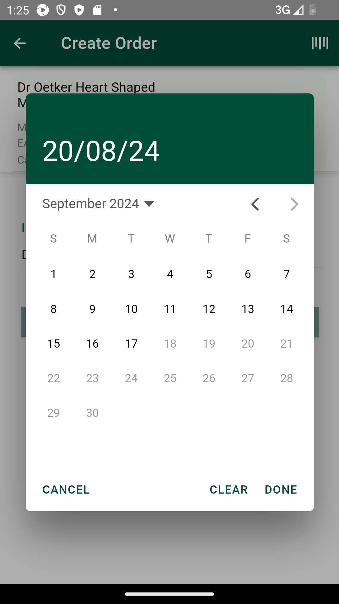
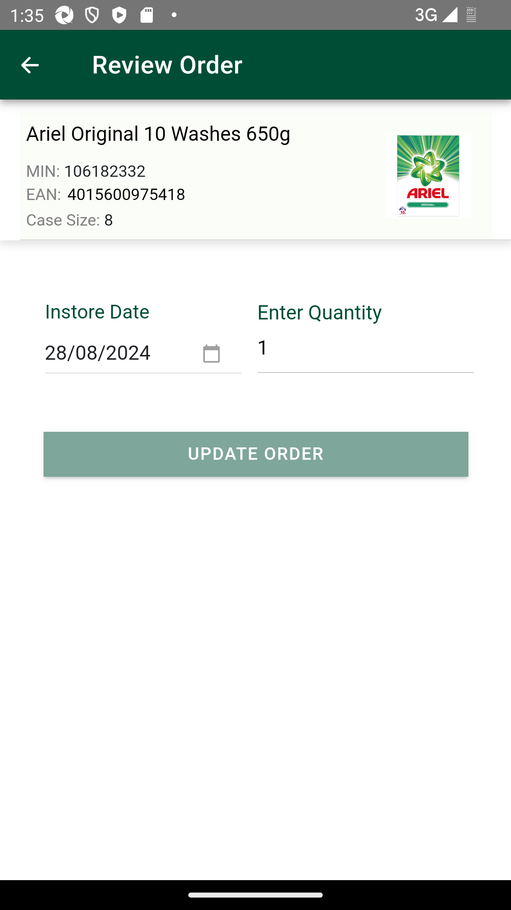

-
Automation Demo
2:23:43 PM / 00:12:18:336 Fail
Automation Demo
08.20.2024 2:23:43 PM 08.20.2024 2:36:02 PM 00:12:18:336 · #test-id=1@CO_DemoFailSMA-56772_INT_Create New Customer order_SMA_Scanning_TC10_To verify Minimum Start date and Maximum start validation on create order screenFailSMA-56772_INT_Create New Customer order_SMA_Scanning_TC10_To verify Minimum Start date and Maximum start validation on create order screenGiven I enter Username and Password for SMA Collegue userWhen I click on login button for SMAAnd I click on 'stockMngmtText' on page 'HomePagePO_New'And I scroll down to "Customer Orders"And I click "sObjectName" "Customer Orders" on page "ManagerOrderPage"And I click "sTabName" "CREATE" on page "ManagerOrderPage"And I click on 'BarCodeBtn' on page 'MOCO.ManagerOrderPage'Then I Enter "106858881" in the "BarCodeEdit" on page 'ManagerOrderPage' and searchAnd I click on 'InstoreDateBtn' on page 'MOCO.ManagerOrderPage'Then I verify the "rangeObj" date range 3 for "Instore Date" from current date + 1 on page 'MOCO.ManagerOrderPage'Then I verify the "rangeObj" date range 28 for "Instore Date" from current date + 1 on page 'MOCO.ManagerOrderPage'com.morrisons.common.action.Hook.afterScenario(io.cucumber.java.Scenario)
And I click "oButton" "DONE" on page "ManagerOrderPage"Step skippedPassSMA-54535_[INT] Customer order | Review orders | SMA_TC12 To verify that customer reviews created customer order when For any existing order prompt , when clicked on review orders button should navigate to review screen with Existing order sorted together and then all other orders.PassSMA-54535_[INT] Customer order | Review orders | SMA_TC12 To verify that customer reviews created customer order when For any existing order prompt , when clicked on review orders button should navigate to review screen with Existing order sorted together and then all other orders.Given I enter Username and Password for SMA Collegue userWhen I click on login button for SMAAnd I click on 'stockMngmtText' on page 'HomePagePO_New'And I scroll down to "Customer Orders"And I click "sObjectName" "Customer Orders" on page "ManagerOrderPage"And I click "sTabName" "CREATE" on page "ManagerOrderPage"And I click on 'BarCodeBtn' on page 'MOCO.ManagerOrderPage'Then I Enter "106182332" in the "BarCodeEdit" on page 'ManagerOrderPage' and searchThen I verify "valid item details" is available to view for "Orders" for "Heinz Beanz Jalfrezi 390g,MIN,EAN,Case Size" on "ManagerOrderPage"Field MIN with value MIN: 106182332Field EAN with value EAN:Field Case Size with value Case Size: 8And I Verify "sObjectName" "Instore Date" on page "ManagerOrderPage"And I click on 'InstoreDateBtn' on page 'MOCO.ManagerOrderPage'And I select a date of date range 8And I click "oButton" "DONE" on page "ManagerOrderPage"Then I Enter the quantity as "7", "QuantityEdt" and click on "CREATE_ORDER" button on "MOCO.ManagerOrderPage" pageThen I verify the error message "errorMsg" "errorMsg1" "Existing Order(s) An order for this product already exists for the same in-store date you have selected." is displayed on page "ManagerOrderPage"And I Verify "oButton" "Cancel" on page "ManagerOrderPage"And I Verify "oButton" "Review Order(s)" on page "ManagerOrderPage"And I click "oButton" "Review Order(s)" on page "ManagerOrderPage"Then I verify review order sorted with existing order sorted together and then all other ordersExpected list [Ariel Original 10 Washes 650g] Actual List [Ariel Original 10 Washes 650g]Expected list [Heinz Beanz Jalfrezi 390g] Actual List [Heinz Beanz Jalfrezi 390g]PassSMA-54535_[INT] Customer order | Review orders | SMA_TC07 To verify that customer reviews created customer order when same start date for multiple items then next sorting is by product description in alphabetical order.PassSMA-54535_[INT] Customer order | Review orders | SMA_TC07 To verify that customer reviews created customer order when same start date for multiple items then next sorting is by product description in alphabetical order.Given I enter Username and Password for SMA Collegue userWhen I click on login button for SMAAnd I click on 'stockMngmtText' on page 'HomePagePO_New'And I scroll down to "Customer Orders"And I click "sObjectName" "Customer Orders" on page "ManagerOrderPage"And I click "sTabName" "REVIEW" on page "ManagerOrderPage"Then I verify "Orders" is sorted by "Instore Date" with second sorting by "oProductDtls" "productName" in "asc" order on page 'ManagerOrderPage'Expected list [ Tue 27 Aug 2024|Heinz Beanz Jalfrezi 390g, Wed 28 Aug 2024|Ariel Original 10 Washes 650g] Actual List [ Tue 27 Aug 2024|Heinz Beanz Jalfrezi 390g, Wed 28 Aug 2024|Ariel Original 10 Washes 650g]FailSMA-54535_[INT] Customer order | Review orders | SMA_TC15 To verify newly created customer order can be edited for start date , end date and qty when order in not liveFailSMA-54535_[INT] Customer order | Review orders | SMA_TC15 To verify newly created customer order can be edited for start date , end date and qty when order in not liveGiven I enter Username and Password for SMA Collegue userWhen I click on login button for SMAAnd I click on 'stockMngmtText' on page 'HomePagePO_New'And I scroll down to "Customer Orders"And I click "sObjectName" "Customer Orders" on page "ManagerOrderPage"And I click "sTabName" "REVIEW" on page "ManagerOrderPage"And I click "Orders" "MIN: 106182332" on page "ManagerOrderPage"And I click on 'InstoreDateBtn' on page 'MOCO.ManagerOrderPage'And I select a date of date range 8And I capture the "Instore Date"And I click "oButton" "DONE" on page "ManagerOrderPage"Then I Enter the quantity as "1", "QuantityEdt" and click on "sLocatorName" "UPDATE ORDER" button on "MOCO.ManagerOrderPage" pageAnd I click "oButton" "Confirm" on page "ManagerOrderPage"com.morrisons.common.action.Hook.afterScenario(io.cucumber.java.Scenario)
Then I verify "Manager orders" is available to view for "Orders" for "MIN:106182332,QTY:1,DEPT,Created by,Instore Date:runtimedate" on "ManagerOrderPage"Step skipped
-
java.lang.AssertionError
2 tests
java.lang.AssertionError
2 failedStatus Timestamp TestName Fail 14:26:02 PM Then I verify the "rangeObj" date range 28 for "Instore Date" from current date + 1 on page 'MOCO.ManagerOrderPage' Automation Demo.SMA-56772_INT_Create New Customer order_SMA_Scanning_TC10_To verify Minimum Start date and Maximum start validation on create order screen.Then I verify the "rangeObj" date range 28 for "Instore Date" from current date + 1 on page 'MOCO.ManagerOrderPage'Fail 14:35:22 PM And I click "oButton" "Confirm" on page "ManagerOrderPage" Automation Demo.SMA-54535_[INT] Customer order | Review orders | SMA_TC15 To verify newly created customer order can be edited for start date , end date and qty when order in not live.And I click "oButton" "Confirm" on page "ManagerOrderPage"
-
@sma
8 tests
@sma
4 passed 4 failedStatus Timestamp TestName Fail 14:23:43 PM SMA-56772_INT_Create New Customer order_SMA_Scanning_TC10_To verify Minimum Start date and Maximum start validation on create order screen Automation Demo.SMA-56772_INT_Create New Customer order_SMA_Scanning_TC10_To verify Minimum Start date and Maximum start validation on create order screenFail 14:23:43 PM SMA-56772_INT_Create New Customer order_SMA_Scanning_TC10_To verify Minimum Start date and Maximum start validation on create order screen Automation Demo.SMA-56772_INT_Create New Customer order_SMA_Scanning_TC10_To verify Minimum Start date and Maximum start validation on create order screenPass 14:27:10 PM SMA-54535_[INT] Customer order | Review orders | SMA_TC12 To verify that customer reviews created customer order when For any existing order prompt , when clicked on review orders button should navigate to review screen with Existing order sorted together and then all other orders. Automation Demo.SMA-54535_[INT] Customer order | Review orders | SMA_TC12 To verify that customer reviews created customer order when For any existing order prompt , when clicked on review orders button should navigate to review screen with Existing order sorted together and then all other orders.Pass 14:27:10 PM SMA-54535_[INT] Customer order | Review orders | SMA_TC12 To verify that customer reviews created customer order when For any existing order prompt , when clicked on review orders button should navigate to review screen with Existing order sorted together and then all other orders. Automation Demo.SMA-54535_[INT] Customer order | Review orders | SMA_TC12 To verify that customer reviews created customer order when For any existing order prompt , when clicked on review orders button should navigate to review screen with Existing order sorted together and then all other orders.Pass 14:30:59 PM SMA-54535_[INT] Customer order | Review orders | SMA_TC07 To verify that customer reviews created customer order when same start date for multiple items then next sorting is by product description in alphabetical order. Automation Demo.SMA-54535_[INT] Customer order | Review orders | SMA_TC07 To verify that customer reviews created customer order when same start date for multiple items then next sorting is by product description in alphabetical order.Pass 14:30:59 PM SMA-54535_[INT] Customer order | Review orders | SMA_TC07 To verify that customer reviews created customer order when same start date for multiple items then next sorting is by product description in alphabetical order. Automation Demo.SMA-54535_[INT] Customer order | Review orders | SMA_TC07 To verify that customer reviews created customer order when same start date for multiple items then next sorting is by product description in alphabetical order.Fail 14:33:18 PM SMA-54535_[INT] Customer order | Review orders | SMA_TC15 To verify newly created customer order can be edited for start date , end date and qty when order in not live Automation Demo.SMA-54535_[INT] Customer order | Review orders | SMA_TC15 To verify newly created customer order can be edited for start date , end date and qty when order in not liveFail 14:33:18 PM SMA-54535_[INT] Customer order | Review orders | SMA_TC15 To verify newly created customer order can be edited for start date , end date and qty when order in not live Automation Demo.SMA-54535_[INT] Customer order | Review orders | SMA_TC15 To verify newly created customer order can be edited for start date , end date and qty when order in not live -
@CO_Demo
5 tests
@CO_Demo
2 passed 3 failedStatus Timestamp TestName Fail 14:23:43 PM Automation Demo Fail 14:23:43 PM SMA-56772_INT_Create New Customer order_SMA_Scanning_TC10_To verify Minimum Start date and Maximum start validation on create order screen Automation Demo.SMA-56772_INT_Create New Customer order_SMA_Scanning_TC10_To verify Minimum Start date and Maximum start validation on create order screenPass 14:27:10 PM SMA-54535_[INT] Customer order | Review orders | SMA_TC12 To verify that customer reviews created customer order when For any existing order prompt , when clicked on review orders button should navigate to review screen with Existing order sorted together and then all other orders. Automation Demo.SMA-54535_[INT] Customer order | Review orders | SMA_TC12 To verify that customer reviews created customer order when For any existing order prompt , when clicked on review orders button should navigate to review screen with Existing order sorted together and then all other orders.Pass 14:30:59 PM SMA-54535_[INT] Customer order | Review orders | SMA_TC07 To verify that customer reviews created customer order when same start date for multiple items then next sorting is by product description in alphabetical order. Automation Demo.SMA-54535_[INT] Customer order | Review orders | SMA_TC07 To verify that customer reviews created customer order when same start date for multiple items then next sorting is by product description in alphabetical order.Fail 14:33:18 PM SMA-54535_[INT] Customer order | Review orders | SMA_TC15 To verify newly created customer order can be edited for start date , end date and qty when order in not live Automation Demo.SMA-54535_[INT] Customer order | Review orders | SMA_TC15 To verify newly created customer order can be edited for start date , end date and qty when order in not live -
@wdemCustmrMinMaxStartDate
2 tests
@wdemCustmrMinMaxStartDate
2 failedStatus Timestamp TestName Fail 14:23:43 PM SMA-56772_INT_Create New Customer order_SMA_Scanning_TC10_To verify Minimum Start date and Maximum start validation on create order screen Automation Demo.SMA-56772_INT_Create New Customer order_SMA_Scanning_TC10_To verify Minimum Start date and Maximum start validation on create order screenFail 14:23:43 PM SMA-56772_INT_Create New Customer order_SMA_Scanning_TC10_To verify Minimum Start date and Maximum start validation on create order screen Automation Demo.SMA-56772_INT_Create New Customer order_SMA_Scanning_TC10_To verify Minimum Start date and Maximum start validation on create order screen -
@demExistAllOrdersVerf
2 tests
@demExistAllOrdersVerf
2 passedStatus Timestamp TestName Pass 14:27:10 PM SMA-54535_[INT] Customer order | Review orders | SMA_TC12 To verify that customer reviews created customer order when For any existing order prompt , when clicked on review orders button should navigate to review screen with Existing order sorted together and then all other orders. Automation Demo.SMA-54535_[INT] Customer order | Review orders | SMA_TC12 To verify that customer reviews created customer order when For any existing order prompt , when clicked on review orders button should navigate to review screen with Existing order sorted together and then all other orders.Pass 14:27:10 PM SMA-54535_[INT] Customer order | Review orders | SMA_TC12 To verify that customer reviews created customer order when For any existing order prompt , when clicked on review orders button should navigate to review screen with Existing order sorted together and then all other orders. Automation Demo.SMA-54535_[INT] Customer order | Review orders | SMA_TC12 To verify that customer reviews created customer order when For any existing order prompt , when clicked on review orders button should navigate to review screen with Existing order sorted together and then all other orders. -
@demCustomerSortOrdrverf
2 tests
@demCustomerSortOrdrverf
2 passedStatus Timestamp TestName Pass 14:30:59 PM SMA-54535_[INT] Customer order | Review orders | SMA_TC07 To verify that customer reviews created customer order when same start date for multiple items then next sorting is by product description in alphabetical order. Automation Demo.SMA-54535_[INT] Customer order | Review orders | SMA_TC07 To verify that customer reviews created customer order when same start date for multiple items then next sorting is by product description in alphabetical order.Pass 14:30:59 PM SMA-54535_[INT] Customer order | Review orders | SMA_TC07 To verify that customer reviews created customer order when same start date for multiple items then next sorting is by product description in alphabetical order. Automation Demo.SMA-54535_[INT] Customer order | Review orders | SMA_TC07 To verify that customer reviews created customer order when same start date for multiple items then next sorting is by product description in alphabetical order. -
@demNonLiveOrdEdit
2 tests
@demNonLiveOrdEdit
2 failedStatus Timestamp TestName Fail 14:33:18 PM SMA-54535_[INT] Customer order | Review orders | SMA_TC15 To verify newly created customer order can be edited for start date , end date and qty when order in not live Automation Demo.SMA-54535_[INT] Customer order | Review orders | SMA_TC15 To verify newly created customer order can be edited for start date , end date and qty when order in not liveFail 14:33:18 PM SMA-54535_[INT] Customer order | Review orders | SMA_TC15 To verify newly created customer order can be edited for start date , end date and qty when order in not live Automation Demo.SMA-54535_[INT] Customer order | Review orders | SMA_TC15 To verify newly created customer order can be edited for start date , end date and qty when order in not live
Started
Aug 20, 2024 02:23:36 PM
Ended
Aug 20, 2024 02:37:04 PM
Features Passed
0
Features Failed
1
Features
Scenarios
Steps
Timeline
Tags
| Name | Passed | Failed | Skipped | Others | Passed % |
|---|---|---|---|---|---|
| @sma | 4 | 4 | 0 | 0 | 50% |
| @CO_Demo | 2 | 3 | 0 | 0 | 40% |
| @wdemCustmrMinMaxStartDate | 0 | 2 | 0 | 0 | 0% |
| @demExistAllOrdersVerf | 2 | 0 | 0 | 0 | 100% |
| @demCustomerSortOrdrverf | 2 | 0 | 0 | 0 | 100% |
| @demNonLiveOrdEdit | 0 | 2 | 0 | 0 | 0% |